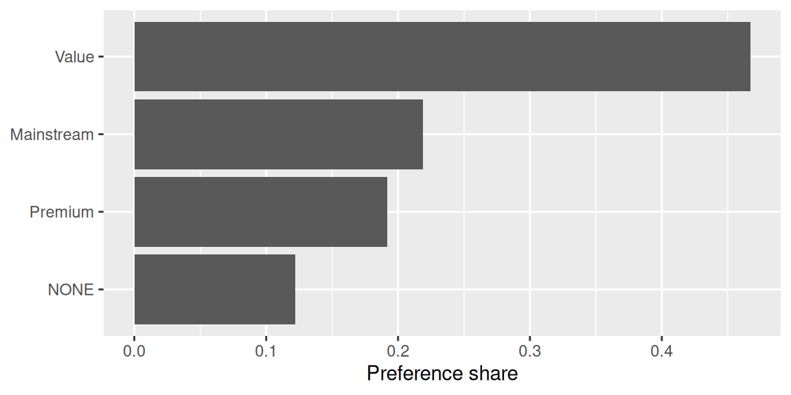
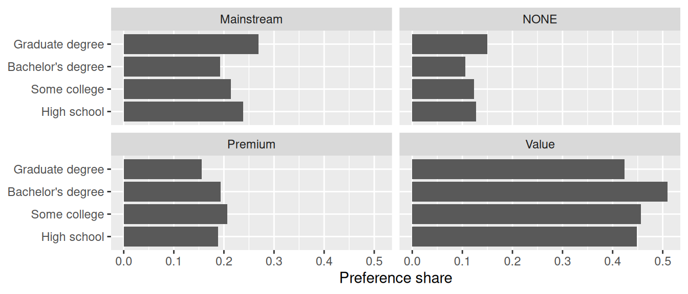
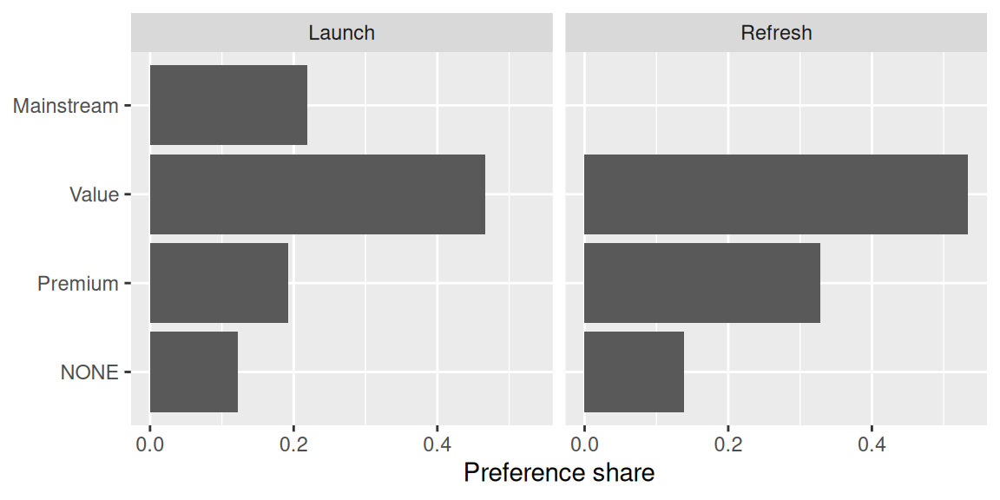
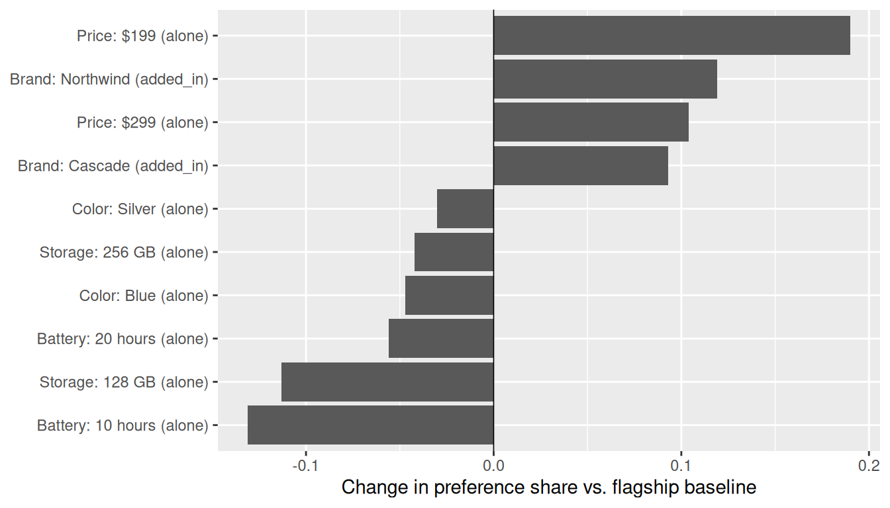

head(example_utilities)
#> # A tibble: 6 × 22
#> respondent_id A1B1 A1B2 A1B3 A2B1 A2B2 A2B3 A3B1 A3B2 A3B3
#> <int> <dbl> <dbl> <dbl> <dbl> <dbl> <dbl> <dbl> <dbl> <dbl>
#> 1 1 -0.178 0.362 0.042 0.596 -0.573 -1.05 -0.387 0.135 0.406
#> 2 2 0.909 0.303 -0.792 0.409 0.369 -1.47 -0.468 0.728 0.143
#> 3 3 -0.26 -0.82 0.044 0.188 0.151 -0.311 -0.401 -0.053 0.337
#> 4 4 -0.062 0.226 -0.372 0.463 0.161 -0.248 -0.265 -0.547 0.828
#> 5 5 0.292 0.46 -0.848 0.946 0.26 -1.23 -0.419 0.046 0.559
#> 6 6 0.382 0.65 -0.15 0.353 0.399 -0.466 -0.187 -0.087 0.789
#> # ℹ 12 more variables: A4B1 <dbl>, A4B2 <dbl>, A4B3 <dbl>, A5B1 <dbl>,
#> # A5B2 <dbl>, A5B3 <dbl>, NONE <dbl>, age <int>, gender <chr>, region <chr>,
#> # income <dbl>, education <int+lbl>Getting started with y2conjoint
y2conjoint provides data structures and functions for working with the output of a choice-based conjoint study. This article walks through a full example using a simulated cell-phone study: loading raw utilities, describing the attributes, defining products, estimating preference shares (overall and by subgroup), and stress-testing a design with a sensitivity analysis.
The phones in this study vary on five attributes — Brand, Price, Battery life, Storage, and Color — and the goal is to understand how those attributes drive choice.
The raw data
A conjoint model produces one part-worth utility per respondent per attribute level. These arrive in a terse “model format” where columns are named A[NUM]B[NUM] — attribute i, level j. The package ships a small simulated example:
Alongside the utilities we need a crosswalk that says what each column means: which attribute (collection) it belongs to, its human-readable name, and — for ordered attributes like price — its rank.
example_crosswalk
#> # A tibble: 15 × 4
#> old_name user_name collection_name collection_order
#> <chr> <chr> <chr> <dbl>
#> 1 A1B1 Northwind Brand NA
#> 2 A1B2 Cascade Brand NA
#> 3 A1B3 Meridian Brand NA
#> 4 A2B1 $199 Price 1
#> 5 A2B2 $299 Price 2
#> 6 A2B3 $399 Price 3
#> 7 A3B1 10 hours Battery 1
#> 8 A3B2 20 hours Battery 2
#> 9 A3B3 30 hours Battery 3
#> 10 A4B1 128 GB Storage 1
#> 11 A4B2 256 GB Storage 2
#> 12 A4B3 512 GB Storage 3
#> 13 A5B1 Black Color NA
#> 14 A5B2 Silver Color NA
#> 15 A5B3 Blue Color NAHere Brand and Color are unordered (collection_order is NA), while Price, Battery, and Storage are ordered.
Building a conjoint_df
conjoint_df() renames the model-format columns to their user-facing names and records the attribute structure as metadata. Extra columns (IDs, demographics) are carried along untouched.
cjt <- conjoint_df(example_utilities, example_crosswalk)
cjt
#> <conjoint_df>: 5 collections
#> • Brand
#> • Price (ordered)
#> • Battery (ordered)
#> • Storage (ordered)
#> • Color
#> NONE = NONE, 6 extra columns
#> # A tibble: 200 × 22
#> respondent_id Northwind Cascade Meridian `$199` `$299` `$399` `10 hours`
#> <int> <dbl> <dbl> <dbl> <dbl> <dbl> <dbl> <dbl>
#> 1 1 -0.178 0.362 0.042 0.596 -0.573 -1.05 -0.387
#> 2 2 0.909 0.303 -0.792 0.409 0.369 -1.47 -0.468
#> 3 3 -0.26 -0.82 0.044 0.188 0.151 -0.311 -0.401
#> 4 4 -0.062 0.226 -0.372 0.463 0.161 -0.248 -0.265
#> 5 5 0.292 0.46 -0.848 0.946 0.26 -1.23 -0.419
#> 6 6 0.382 0.65 -0.15 0.353 0.399 -0.466 -0.187
#> 7 7 0.095 -0.429 0.584 0.556 0.2 0.239 -0.74
#> 8 8 0.803 0.588 -0.297 1.31 0.307 -0.423 -0.647
#> 9 9 0.249 1.62 -0.262 0.656 -0.136 -0.5 -0.608
#> 10 10 0.23 -0.212 -1.30 0.549 -0.666 -0.428 -0.473
#> # ℹ 190 more rows
#> # ℹ 14 more variables: `20 hours` <dbl>, `30 hours` <dbl>, `128 GB` <dbl>,
#> # `256 GB` <dbl>, `512 GB` <dbl>, Black <dbl>, Silver <dbl>, Blue <dbl>,
#> # NONE <dbl>, age <int>, gender <chr>, region <chr>, income <dbl>,
#> # education <int+lbl>The print header summarizes the collections (ordered ones are annotated (ordered)), the outside-good column, and how many extra columns are present.
Protected columns
The level columns and the NONE outside good are protected: they hold the utilities the whole analysis depends on, so conjoint_df guards them against accidental loss.
protected_cols(cjt)
#> [1] "Northwind" "Cascade" "Meridian" "$199" "$299" "$399"
#> [7] "10 hours" "20 hours" "30 hours" "128 GB" "256 GB" "512 GB"
#> [13] "Black" "Silver" "Blue" "NONE"You can wrangle demographics freely, but a protected column cannot be dropped, renamed, or overwritten by accident.
# Filtering rows and editing demographics is fine.
cjt |>
filter(age >= 40) |>
mutate(age = age %/% 10 * 10)
#> <conjoint_df>: 5 collections
#> • Brand
#> • Price (ordered)
#> • Battery (ordered)
#> • Storage (ordered)
#> • Color
#> NONE = NONE, 6 extra columns
#> # A tibble: 124 × 22
#> respondent_id Northwind Cascade Meridian `$199` `$299` `$399` `10 hours`
#> <int> <dbl> <dbl> <dbl> <dbl> <dbl> <dbl> <dbl>
#> 1 4 -0.062 0.226 -0.372 0.463 0.161 -0.248 -0.265
#> 2 5 0.292 0.46 -0.848 0.946 0.26 -1.23 -0.419
#> 3 6 0.382 0.65 -0.15 0.353 0.399 -0.466 -0.187
#> 4 8 0.803 0.588 -0.297 1.31 0.307 -0.423 -0.647
#> 5 10 0.23 -0.212 -1.30 0.549 -0.666 -0.428 -0.473
#> 6 14 0.408 -0.135 0.171 0.015 -0.015 -0.21 -0.36
#> 7 15 0.031 0.589 -0.258 0.522 0.023 -0.279 0.099
#> 8 17 0.512 -0.258 0.434 0.808 -1.18 -0.903 -0.075
#> 9 19 0.374 0.244 -0.599 0.824 -0.094 -0.82 -0.32
#> 10 20 0.519 -0.021 -0.912 0.18 0.588 -0.022 0.19
#> # ℹ 114 more rows
#> # ℹ 14 more variables: `20 hours` <dbl>, `30 hours` <dbl>, `128 GB` <dbl>,
#> # `256 GB` <dbl>, `512 GB` <dbl>, Black <dbl>, Silver <dbl>, Blue <dbl>,
#> # NONE <dbl>, age <dbl>, gender <chr>, region <chr>, income <dbl>,
#> # education <int+lbl>
# Overwriting a protected column is blocked.
cjt |>
mutate(Northwind = 0)
#> Error in `mutate()`:
#> ✖ Can't overwrite the protected column: Northwind.
#> ! The NONE column and columns that are part of a collection in a <conjoint_df>
#> are protected.
#> ℹ Convert to a tibble with `tibble::as_tibble()` to edit them.If you genuinely need to reshape the utilities, call tibble::as_tibble() first to drop the guardrails.
Attributes are collections
conjoint_df() builds a [collection] for each attribute from the crosswalk, but it is worth understanding them directly, because products (below) are validated against them. A plain collection() describes an unordered attribute, while ordered_collection() records a meaningful order — exactly the distinction between a phone’s brand and its price:
brand <- collection("Brand", c("Northwind", "Cascade", "Meridian"))
price <- ordered_collection("Price", c("$199", "$299", "$399"))
brand
#> <collection> Brand
#> • Northwind
#> • Cascade
#> • Meridian
price
#> <collection> Price (ordered)
#> • $199
#> • $299
#> • $399
is_ordered(brand)
#> [1] FALSE
is_ordered(price)
#> [1] TRUEis_ordered() tells the two apart — useful when deciding whether it makes sense to talk about “moving up a level” for an attribute.
Absence levels
Some attributes include a level that means having none of the feature. If this study had also tested a camera, “No camera” would be that level. Flag it with absence so the rest of the package knows it is special:
camera <- collection(
"Camera",
c("No camera", "12 MP", "48 MP"),
absence = "No camera"
)
camera
#> <collection> Camera
#> • No camera (absence)
#> • 12 MP
#> • 48 MPAn absence level is mutually exclusive with other levels of the same attribute — a phone cannot simultaneously have “No camera” and a 48 MP camera — and the package enforces that when you build a product (next section).
Describing products
A product describes one product by selecting levels across collections. Selecting a single level per collection is the common case:
You may select several levels within one collection — useful for a co-branded phone, where the combine function (below) decides how to merge them:
Absence levels are the exception: because they mean “none of this feature”, they cannot be paired with another level from the same attribute. A product that tries to is rejected:
From product to utility
compute_product_utility() is the building block underneath everything else: it collapses a product into a single utility per respondent by combining the selected levels within each attribute and summing across attributes.
head(compute_product_utility(cjt, flagship))
#> [1] -0.438 -2.033 0.438 1.123 -1.427 0.371On its own this vector answers “how appealing is this phone to each respondent?”. Preference share (next) turns those numbers into a market forecast.
Competitive sets and preference shares
A competitive_set bundles the phones that compete for choice. run_scenario() applies a logit (softmax) choice model: it turns each respondent’s product utilities into choice probabilities, takes into account the NONE preference, and averages the probabilities into mean preference shares.
launch_market <- competitive_set(
product(cjt, c("Northwind", "$199", "20 hours", "256 GB", "Black"), name = "Value"),
product(cjt, c("Cascade", "$299", "20 hours", "256 GB", "Silver"), name = "Mainstream"),
product(cjt, c("Meridian", "$399", "30 hours", "512 GB", "Black"), name = "Premium"),
name = "Launch"
)
launch_market
#> <competitive_set> Launch: 4 products: NONE, Value, Mainstream, and Premium
#>
#> NONE
#>
#> <product> Value
#> • Brand: Northwind
#> • Price: $199
#> • Battery: 20 hours
#> • Storage: 256 GB
#> • Color: Black
#>
#> <product> Mainstream
#> • Brand: Cascade
#> • Price: $299
#> • Battery: 20 hours
#> • Storage: 256 GB
#> • Color: Silver
#>
#> <product> Premium
#> • Brand: Meridian
#> • Price: $399
#> • Battery: 30 hours
#> • Storage: 512 GB
#> • Color: Black
shares <- run_scenario(cjt, launch_market)
shares
#> # A tibble: 1 × 5
#> competitive_set share_Value share_Mainstream share_Premium share_NONE
#> <chr> <dbl> <dbl> <dbl> <dbl>
#> 1 Launch 0.467 0.219 0.192 0.122The result is a plain tibble with one row per competitive set - here just Launch - identified by its competitive_set column, and one share_* column per phone plus share_NONE for respondents who would choose none of these phones. Excluding competitive_set, the row sums to 1. competitive_set()’s none argument (default TRUE) controls whether NONE competes at all; setting none = FALSE forces a choice among the set’s products and drops share_NONE from the result.
shares |>
tidyr::pivot_longer(
starts_with("share_"),
names_to = "product",
values_to = "share"
) |>
mutate(product = sub("^share_", "", product)) |>
ggplot(aes(share, reorder(product, share))) +
geom_col() +
labs(x = "Preference share", y = NULL)
Combining levels within a collection
When a product selects more than one level from a collection, combine_fn decides how to merge them. The default, pmax(), takes the best available level — a reasonable rule for co-branding, where buyers respond to the more appealing brand. To instead model the two brands reinforcing one another, pass a named list that sums the Brand utilities; any collection you omit falls back to pmax():
co_market <- competitive_set(
product(
cjt,
c("Northwind", "Cascade", "$199", "20 hours", "256 GB", "Black"),
name = "Co-brand"
),
product(cjt, c("Meridian", "$399", "30 hours", "512 GB", "Black"), name = "Premium"),
name = "Co_brand launch"
)
run_scenario(cjt, co_market, combine_fn = list(Brand = `+`))
#> # A tibble: 1 × 4
#> competitive_set `share_Co-brand` share_Premium share_NONE
#> <chr> <dbl> <dbl> <dbl>
#> 1 Co_brand launch 0.615 0.233 0.153Scaling choice probabilities
scaling_factor multiplies every utility before the softmax. Values above 1 sharpen the shares toward the most attractive phone; values below 1 flatten them toward an even split. It is a convenient handle for calibrating a simulator to known market conditions.
run_scenario(cjt, launch_market, scaling_factor = 2)
#> # A tibble: 1 × 5
#> competitive_set share_Value share_Mainstream share_Premium share_NONE
#> <chr> <dbl> <dbl> <dbl> <dbl>
#> 1 Launch 0.59 0.183 0.162 0.065Preference shares by subgroup
Marketers rarely want a single number — they want to know who prefers what. The .by argument computes shares within subgroups. Each column you name is treated marginally: the sample is split by that column’s values, scored within each, and the results are stacked, with the subgroup size n reported alongside.
run_scenario(cjt, launch_market, .by = region)
#> # A tibble: 4 × 8
#> competitive_set group_var group_level n share_Value share_Mainstream
#> <chr> <chr> <chr> <int> <dbl> <dbl>
#> 1 Launch region Midwest 63 0.474 0.215
#> 2 Launch region Northeast 54 0.465 0.223
#> 3 Launch region South 47 0.472 0.201
#> 4 Launch region West 36 0.454 0.245
#> # ℹ 2 more variables: share_Premium <dbl>, share_NONE <dbl>The n column matters: a share computed from a handful of respondents is noisy, so always check the base before reading too much into a subgroup.
run_scenario(cjt, launch_market, .by = education) |>
tidyr::pivot_longer(
starts_with("share_"),
names_to = "product",
values_to = "share"
) |>
mutate(
product = sub("^share_", "", product),
group_level = factor(group_level, levels = unique(group_level))
) |>
ggplot(aes(share, group_level)) +
geom_col() +
facet_wrap(vars(product)) +
labs(x = "Preference share", y = NULL)
Comparing several competitive sets
run_scenario() also accepts a list of competitive sets. It scores each one independently and binds the results together — the quickest way to compare whole lineups side by side. Here we pit the launch lineup against a possible refresh:
refresh <- competitive_set(
product(cjt, c("Cascade", "$199", "30 hours", "512 GB", "Blue"), name = "Value"),
product(cjt, c("Meridian", "$299", "30 hours", "512 GB", "Black"), name = "Premium"),
name = "Refresh"
)
comparison <- run_scenario(cjt, list(launch_market, refresh))
comparison
#> # A tibble: 2 × 5
#> competitive_set share_Value share_Mainstream share_Premium share_NONE
#> <chr> <dbl> <dbl> <dbl> <dbl>
#> 1 Launch 0.467 0.219 0.192 0.122
#> 2 Refresh 0.534 NA 0.328 0.138The result now has one row per competitive set (Launch and Refresh). Both lineups sell a “Value” phone, so share_Value is shared by both rows - each set’s own share appears in its own row. “Mainstream” and “Premium” phones are unique to one lineup, so share_Mainstream/share_Premium are NA in the other set’s row.
comparison |>
tidyr::pivot_longer(
starts_with("share_"),
names_to = "product",
values_to = "share"
) |>
mutate(product = sub("^share_", "", product)) |>
ggplot(aes(share, reorder(product, share))) +
geom_col() +
facet_wrap(vars(competitive_set)) +
labs(x = "Preference share", y = NULL)
#> Warning: Removed 1 row containing missing values or values outside the scale range
#> (`geom_col()`).
Sensitivity analysis
Once you have a candidate phone, the next question is usually “which change would move share the most?”. sensitivity_analysis() perturbs a product one level at a time and reports how each change shifts preference share against a baseline.
For a single-select attribute it swaps the chosen level for each alternative (alone); for an attribute you mark as multiple-select it instead adds (added_in) or removes (taken_out) a level. Here we treat Brand as multiple-select — modelling co-branding — and everything else as single-select:
sens <- sensitivity_analysis(cjt, multiple_select = "Brand", product = flagship)
sens
#> # A tibble: 10 × 7
#> Feature Level comparison preference_share baseline delta product_name
#> <chr> <chr> <chr> <dbl> <dbl> <dbl> <chr>
#> 1 Brand Northwind added_in 0.701 0.582 0.119 Flagship
#> 2 Brand Cascade added_in 0.675 0.582 0.0930 Flagship
#> 3 Price $199 alone 0.772 0.582 0.19 Flagship
#> 4 Price $299 alone 0.686 0.582 0.104 Flagship
#> 5 Battery 10 hours alone 0.451 0.582 -0.131 Flagship
#> 6 Battery 20 hours alone 0.526 0.582 -0.0560 Flagship
#> 7 Storage 128 GB alone 0.469 0.582 -0.113 Flagship
#> 8 Storage 256 GB alone 0.54 0.582 -0.0420 Flagship
#> 9 Color Silver alone 0.552 0.582 -0.0300 Flagship
#> 10 Color Blue alone 0.535 0.582 -0.0470 FlagshipA tornado chart makes the levers obvious: bars to the right raise share relative to the flagship baseline, bars to the left cost share.
sens |>
mutate(change = paste0(Feature, ": ", Level, " (", comparison, ")")) |>
ggplot(aes(delta, reorder(change, delta))) +
geom_col() +
geom_vline(xintercept = 0, linewidth = 0.3) +
labs(
x = "Change in preference share vs. flagship baseline",
y = NULL
)
Read this as a to-do list for the design: the changes at the extremes are where price, battery, or storage decisions matter most for this phone’s share. ```